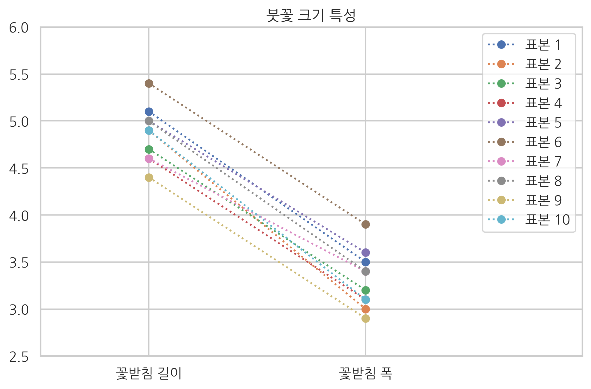
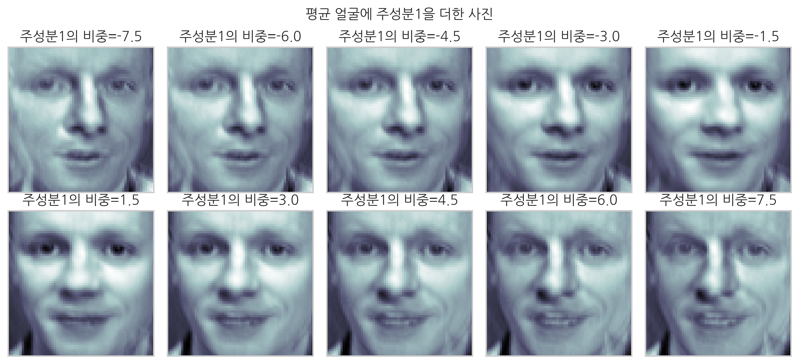
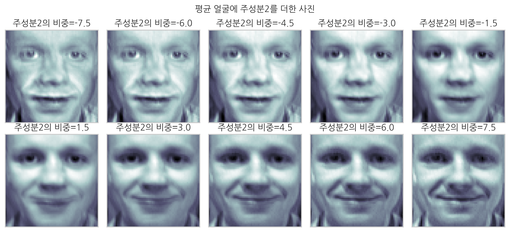
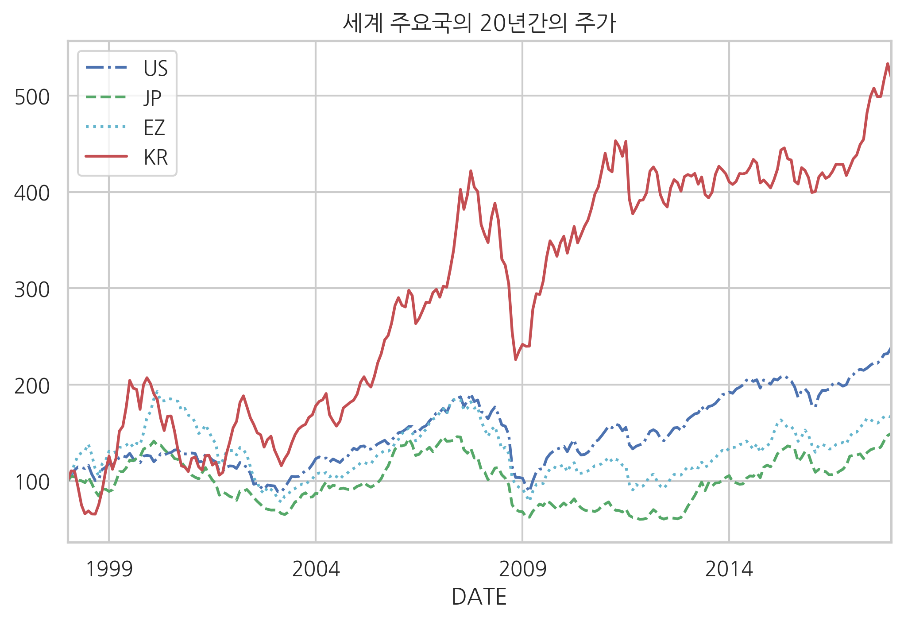
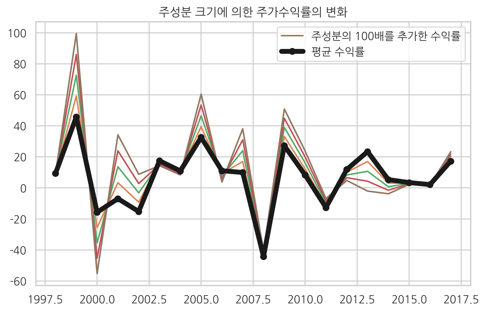

from sklearn.datasets import load_iris
iris = load_iris()
N = 10 # 앞의 10송이만 선택
X = iris.data[:N, :2] # 꽃받침 길이와 꽃받침 폭만 선택
plt.plot(X.T, 'o:')
plt.xticks(range(4), ["꽃받침 길이", "꽃받침 폭"])
plt.xlim(-0.5, 2)
plt.ylim(2.5, 6)
plt.title("붓꽃 크기 특성")
plt.legend(["표본 {}".format(i + 1) for i in range(N)])
plt.show()

plt.figure(figsize=(8, 8))
ax = sns.scatterplot(0, 1, data=pd.DataFrame(X), s=100, color=".2", marker="s")
for i in range(N):
ax.text(X[i, 0] - 0.05, X[i, 1] + 0.03, "표본 {}".format(i + 1))
plt.xlabel("꽃받침 길이")
plt.ylabel("꽃받침 폭")
plt.title("붓꽃 크기 특성 (2차원 표시)")
plt.axis("equal")
plt.show()

from sklearn.decomposition import PCA
pca1 = PCA(n_components=1)
X_low = pca1.fit_transform(X)
X2 = pca1.inverse_transform(X_low)
plt.figure(figsize=(7, 7))
ax = sns.scatterplot(0, 1, data=pd.DataFrame(X), s=100, color=".2", marker="s")
for i in range(N):
d = 0.03 if X[i, 1] > X2[i, 1] else -0.04
ax.text(X[i, 0] - 0.065, X[i, 1] + d, "표본 {}".format(i + 1))
plt.plot([X[i, 0], X2[i, 0]], [X[i, 1], X2[i, 1]], "k--")
plt.plot(X2[:, 0], X2[:, 1], "o-", markersize=10)
plt.plot(X[:, 0].mean(), X[:, 1].mean(), markersize=10, marker="D")
plt.axvline(X[:, 0].mean(), c='r')
plt.axhline(X[:, 1].mean(), c='r')
plt.grid(False)
plt.xlabel("꽃받침 길이")
plt.ylabel("꽃받침 폭")
plt.title("Iris 데이터의 1차원 차원축소")
plt.axis("equal")
plt.show()

pca1.mean_
array([4.86, 3.31])
pca1.components_
array([[0.68305029, 0.73037134]])
X0 = X - X.mean(axis=0)
U, S, VT = np.linalg.svd(X0)
VT
array([[-0.68305029, -0.73037134],
[-0.73037134, 0.68305029]])
VT[:, 0]
array([-0.68305029, -0.73037134])
XCOV = X0.T @ X0
W, V = np.linalg.eig(XCOV)
W
array([0.17107711, 1.44192289])
V
array([[-0.73037134, -0.68305029],
[ 0.68305029, -0.73037134]])
V[:, np.argmax(W)]
array([-0.68305029, -0.73037134])
X[7, :]
array([5. , 3.4])
X_low[7]
array([0.16136046])
pca1.components_ @ (X[7, :] - pca1.mean_)
array([0.16136046])
X2[7, :]
array([4.97021731, 3.42785306])
from sklearn.datasets import fetch_olivetti_faces
faces_all = fetch_olivetti_faces()
K = 20 # 20번 인물의 사진만 선택
faces = faces_all.images[faces_all.target == K]
N = 2
M = 5
fig = plt.figure(figsize=(10, 5))
plt.subplots_adjust(top=1, bottom=0, hspace=0, wspace=0.05)
for i in range(N):
for j in range(M):
k = i * M + j
ax = fig.add_subplot(N, M, k+1)
ax.imshow(faces[k], cmap=plt.cm.bone)
ax.grid(False)
ax.xaxis.set_ticks([])
ax.yaxis.set_ticks([])
plt.suptitle("올리베티 얼굴 사진")
plt.tight_layout()
plt.show()

from sklearn.decomposition import PCA
pca3 = PCA(n_components=2)
X3 = faces_all.data[faces_all.target == K]
W3 = pca3.fit_transform(X3)
X32 = pca3.inverse_transform(W3)
N = 2
M = 5
fig = plt.figure(figsize=(10, 5))
plt.subplots_adjust(top=1, bottom=0, hspace=0, wspace=0.05)
for i in range(N):
for j in range(M):
k = i * M + j
ax = fig.add_subplot(N, M, k+1)
ax.imshow(X32[k].reshape(64, 64), cmap=plt.cm.bone)
ax.grid(False)
ax.xaxis.set_ticks([])
ax.yaxis.set_ticks([])
plt.suptitle("주성분 분석으로 근사화한 올리베티 얼굴 사진")
plt.tight_layout()
plt.show()

face_mean = pca3.mean_.reshape(64, 64)
face_p1 = pca3.components_[0].reshape(64, 64)
face_p2 = pca3.components_[1].reshape(64, 64)
plt.subplot(131)
plt.imshow(face_mean, cmap=plt.cm.bone)
plt.grid(False)
plt.xticks([])
plt.yticks([])
plt.title("평균 얼굴")
plt.subplot(132)
plt.imshow(face_p1, cmap=plt.cm.bone)
plt.grid(False)
plt.xticks([])
plt.yticks([])
plt.title("주성분 1")
plt.subplot(133)
plt.imshow(face_p2, cmap=plt.cm.bone)
plt.grid(False)
plt.xticks([])
plt.yticks([])
plt.title("주성분 2")
plt.show()

N = 2
M = 5
fig = plt.figure(figsize=(10, 5))
plt.subplots_adjust(top=1, bottom=0, hspace=0, wspace=0.05)
for i in range(N):
for j in range(M):
k = i * M + j
ax = fig.add_subplot(N, M, k+1)
w = 1.5 * (k - 5) if k < 5 else 1.5 * (k - 4)
ax.imshow(face_mean + w * face_p1, cmap=plt.cm.bone)
ax.grid(False)
ax.xaxis.set_ticks([])
ax.yaxis.set_ticks([])
plt.title("주성분1의 비중={}".format(w))
plt.suptitle("평균 얼굴에 주성분1을 더한 사진")
plt.tight_layout()
plt.show()

N = 2
M = 5
fig = plt.figure(figsize=(10, 5))
plt.subplots_adjust(top=1, bottom=0, hspace=0, wspace=0.05)
for i in range(N):
for j in range(M):
k = i * M + j
ax = fig.add_subplot(N, M, k+1)
w = 1.5 * (k - 5) if k < 5 else 1.5 * (k - 4)
ax.imshow(face_mean + w * face_p2, cmap=plt.cm.bone)
ax.grid(False)
ax.xaxis.set_ticks([])
ax.yaxis.set_ticks([])
plt.title("주성분2의 비중={:.1f}".format(w))
plt.suptitle("평균 얼굴에 주성분2를 더한 사진")
plt.tight_layout()
plt.show()

pd.core.common.is_list_like = pd.api.types.is_list_like
import pandas_datareader.data as web
import datetime
symbols = [
"SPASTT01USM661N", # US: 미국
"SPASTT01JPM661N", # JP: 일본
"SPASTT01EZM661N", # EZ: 유럽
"SPASTT01KRM661N", # KR: 한국
]
data = pd.DataFrame()
for sym in symbols:
data[sym] = web.DataReader(sym, data_source='fred',
start=datetime.datetime(1998, 1, 1),
end=datetime.datetime(2017, 12, 31))[sym]
data.columns = ["US", "JP", "EZ", "KR"]
data = data / data.iloc[0] * 100
styles = ["b-.", "g--", "c:", "r-"]
data.plot(style=styles)
plt.title("세계 주요국의 20년간의 주가")
plt.show()

df = ((data.pct_change() + 1).resample("A").prod() - 1).T * 100
print(df.iloc[:, :5])
DATE 1998-12-31 1999-12-31 2000-12-31 2001-12-31 2002-12-31
US 14.249290 10.800392 1.094171 -9.638213 -17.680773
JP -8.567915 47.802619 -18.365577 -23.827406 -16.923968
EZ 21.308040 36.872314 1.375330 -21.857080 -30.647772
KR 10.411582 87.623876 -46.975114 27.644005 4.448180
df.T.plot(style=styles)
plt.title("주요국의 과거 20년간 연간수익률")
plt.xticks(df.columns)
plt.show()

pca2 = PCA(n_components=1)
w = pca2.fit_transform(df)
m = pca2.mean_
p1 = pca2.components_[0]
xrange = np.linspace(1998, 2017, 20, dtype=int)
for i in np.linspace(0, 100, 5):
plt.plot(xrange, pca2.mean_ + p1 * i)
plt.plot(xrange, pca2.mean_ + p1 * 100, label="주성분의 100배를 추가한 수익률")
plt.plot(xrange, pca2.mean_, "ko-", lw=5, label="평균 수익률")
plt.title("주성분 크기에 의한 주가수익률의 변화")
plt.legend()
plt.show()

df_w = pd.DataFrame(w)
df_w.index = df.index
df_w.columns = ["주성분 비중"]
print(df_w)
주성분 비중
US -33.413784
JP -20.943197
EZ -26.917702
KR 81.274683
df_i = pd.DataFrame(pca2.inverse_transform(w))
df_i.index = df.index
df_i.columns = df.columns
df_i.iloc[:, -10:]
df_i.T.plot(style=styles)
plt.title("주성분을 사용한 주요국의 과거 20년간 연간수익률 근사치")
plt.xticks(df.columns)
plt.show()